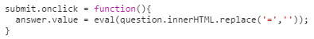

Test#0
Test#0 是一串計算題，但送出按鈕被鎖住了。
使用前端工程師最基本的一個技能，按下 Ctrl-U 查看原始碼後
就得到下一個頁面的網址，這裡與其說是考題，
不如說是篩選程式人員與一般人的一個程序而已，因此他是 Test#0
Test#1
Test#1 是一個雜亂的字母表
一樣查看原始碼之後會發現每個字母都是一個 span，
其中有些 span 的 class name 與其它的不一樣
Inspect 其中一個 span，會發現 span.p 有一個 style
用 Dev tool 將 span.p 的 display 改為 none 之後
會看到剩下的 span.q，也取得下一關的網址
Test#2
一個不知所謂的字串跟圖，總之先看原始碼
會看到一些 code，是很基本的字串重排，
仔細看才發現少了好幾個分號，不過那不是重點
給非程式人員：將某個句子的第 14 個字母、第 8 個字母、第 7 個...
依序取出的話可以組成 "monthlysandpile." 這個句子，
那麼這個原本的句子是什麼?
要用手寫或是程式解都可以，這裡用最土法煉鋼的方式寫一個程式解
Test#3
 畫面上是每秒自動變換題目的一個計算題，
畫面上是每秒自動變換題目的一個計算題，
這邊沒有任何 trick，你必須 inject 一個 javascript 程式來計算題目

這邊是一個簡單的解法，變數這裡直接用 dom id，
反正自己的瀏覽器支援就好了
Complete
這是最後的通關畫面，按下發訊按鈕，就會開啟與我們的對話
至挑戰結束為止，經挑戰看到這個畫面的計 13 人
其實最後還有一個隱藏的挑戰，
題目沒有出現在任何地方，但答案是一個四位數字，
你知道答案了嗎? 第一個數字不是偶數喔 XD